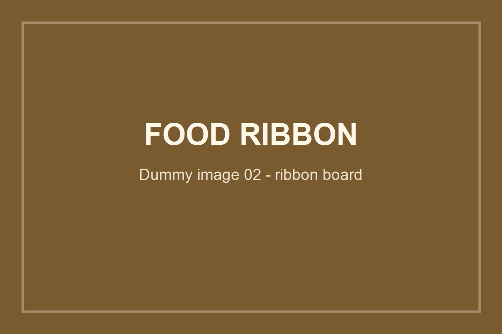
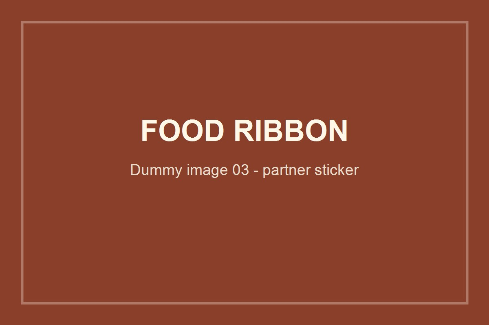
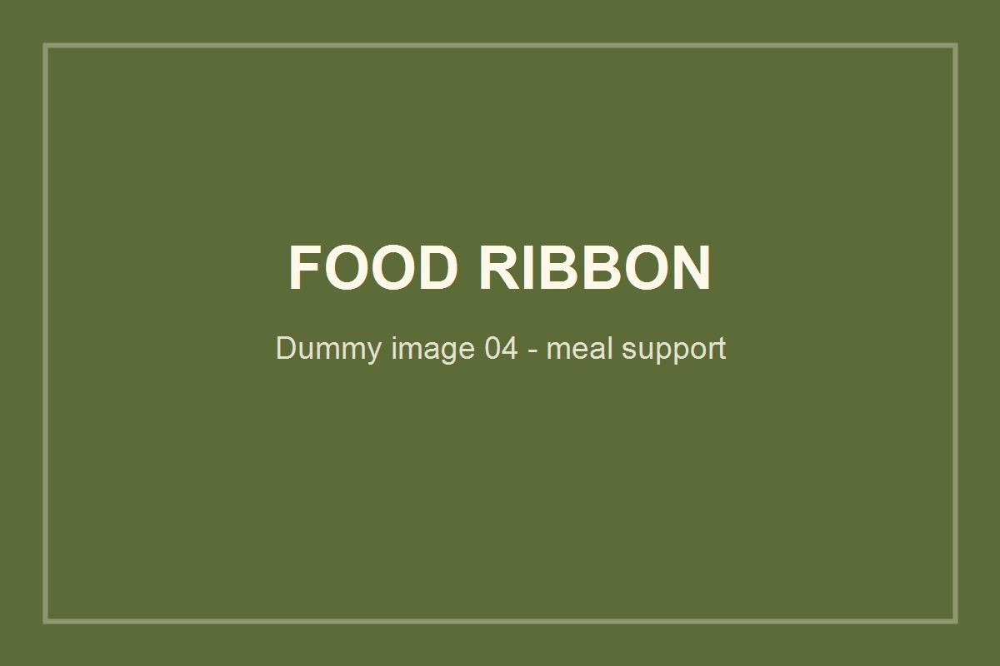

一枚のリボンが、
子どもの一食になる。
協同組合 阿波山雅は2024年3月から、地域の子どもたちへ食事を届けるフードリボン活動を続けています。山を訪れた人の優しさが、木頭の子どもたちの笑顔につながっています。
山の食事と、地域の子どもをつなぐ仕組み。
フードリボンは、支援者がリボン（食券）を購入し、そのリボンで子どもたちが食事を受け取れる仕組みです。阿波山雅では、高の瀬レストハウス平の里と奥槍戸山の家でリボンを受け付け、木頭図書館前で子どもたちへ食事を届けています。
食事提供だけでなく、開催日には子どもたちが集まり、笑い声が響く地域の居場所にもなっています。山小屋運営と地域の子ども支援が交わる、阿波山雅らしい取り組みです。
活動の現場
支援者がリボンを付け、子どもたちが集まり、地域の居場所が生まれていく様子。




フードリボンの仕組み
山を訪れた人の気持ちを、子どもたちへ届ける3ステップ。
支援者がリボンを購入する
高の瀬レストハウス平の里または奥槍戸山の家で、フードリボン（1枚300円）を購入。ボードにリボンを付けて支援の意思を示します。
木頭図書館前で提供する
毎週木曜日15:00〜17:30、木頭図書館前でリボンと引き換えに食事を提供。中学生以下を対象に、温かい食事を届けます。
地域の居場所になる
食事だけでなく、子どもたちが集まり、追いかけっこや笑い声で賑わう場所になっています。木頭図書館との関係が、地域イベントへの相互参加へも広がっています。
活動の記録
利用案内
木頭図書館前での提供案内です。最新情報は阿波山雅へお問い合わせください。
| 実施場所 | 木頭図書館前（那賀郡那賀町木頭和無田マツギ40） |
|---|---|
| 実施日 | 毎週木曜日（※変更になる場合があります。最新情報をご確認ください） |
| 実施時間 | 15:00〜17:30 |
| 対象 | 中学生以下 |
| リボン金額 | 300円（支援者が購入） |
| リボン受け付け拠点 | 高の瀬レストハウス 平の里、奥槍戸山の家 |
| お問い合わせ | 090-6281-7780 |
この活動にかける思い
一枚のリボンが、地域の子どもたちの温かい一食につながります。
皆さまから託されたリボンで子どもたちへ食事を届けるだけでなく、開催日は子どもたちの笑い声が響く、地域の居場所にもなっています。
山を訪れた一人ひとりの優しさを、地域の子どもたちへ。皆さまと一緒に、食事と笑顔がつながる場所を育てていきます。
山を訪れる気持ちが、
地域の子どもたちへ届く。
リボンの購入は、平の里または奥槍戸山の家でお受けしています。山を楽しみながら、地域とつながる活動に参加してみてください。